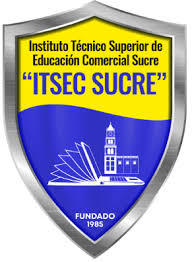

Instituto Técnico Superior de Educación comercial sucre
“ITSEC SUCRE”
CARRERA: SISTEMAS INFORMÁTICOS

TRABAJO PRÁCTICO
Emprendimientos Itsec2025
MATERIA: Diseño y Programación Web
DOCENTE: Ing. Hugo Alfredo Taborga Paz
ESTUDIANTES: Ávila Paco Noelia
CURSO: 1"C"
Agosto, 2025